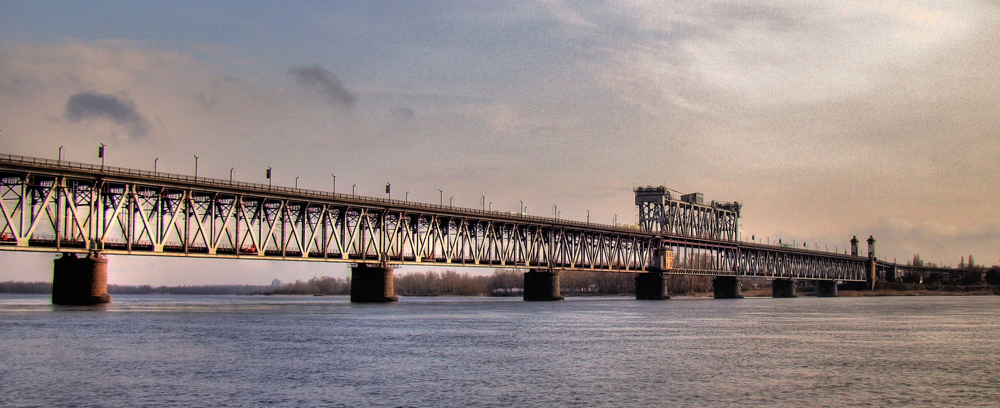

не Офіційний сайт міста Кременчука
Кременчу́к — місто в Полтавській області України, адміністративний центр Кременчуцького району. Населення — 220 тисяч осіб (2019), за цим показником посідає 29 місце в Україні. Постановою Кабінету Міністрів України від 26 липня 2001 року місто увійшло до списку історичних населених місць України.[2]. Місто розміщене в зоні помірного континентального клімату в межах Придніпровської низовини і середньої течії річки Дніпра на лівому та правому її берегах, у центральній частині України на відстані 115 км від обласного центру міста Полтави і 290 км від столиці України міста Києва. Територія становить 9600 га.[3] Адміністративно місто поділене на два райони: Автозаводський (лівобережна частина) та Крюківський (правобережна та частково лівобережна).
